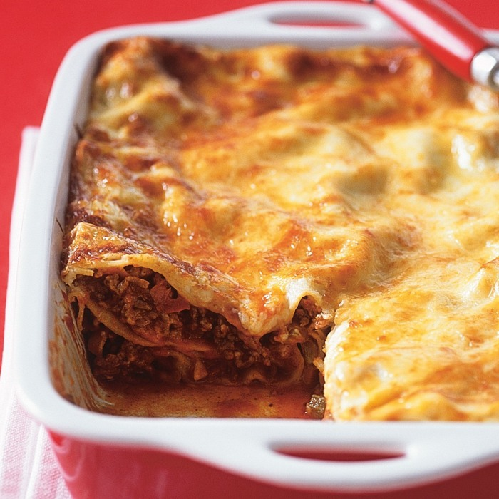

Food and Health Benefit
Lasagne is a beloved Italian dish layered with pasta, sauce, and cheese. Learn about the traditional components of lasagne, including lasagne calories, lasagne shelf life, and tips for assembling and baking the perfect lasagne to achieve a balance of flavors Read more

Pancake mix offers a convenient way to whip up a quick breakfast. Explore the different varieties available, tips for enhancing the mix with additional ingredients for fluffier pancakes, and how to select mixes with lower sugar content for a healthier option Read more
Burritos wrap convenience and flavor into one hearty package, making them a beloved choice for any meal of the day. Learn how to select healthier burritos or make your own at home, and discover the best practices for storing them to maintain freshness and flavor for future meals Read more

Soft, fluffy buns are a versatile staple for burgers or sandwiches. Explore the variety of buns available, their nutritional aspects, and how to choose fresh buns from your local bakery. Plus, get tips on storing them to maintain their softness Read more

Pie is a beloved dessert that comes in countless flavors and styles. Discover how to choose or make pies with healthier ingredients, learn about the nutritional aspects of different types of pies, and find storage tips to keep pie fresh, whether it's fruit-filled or creamy Read more